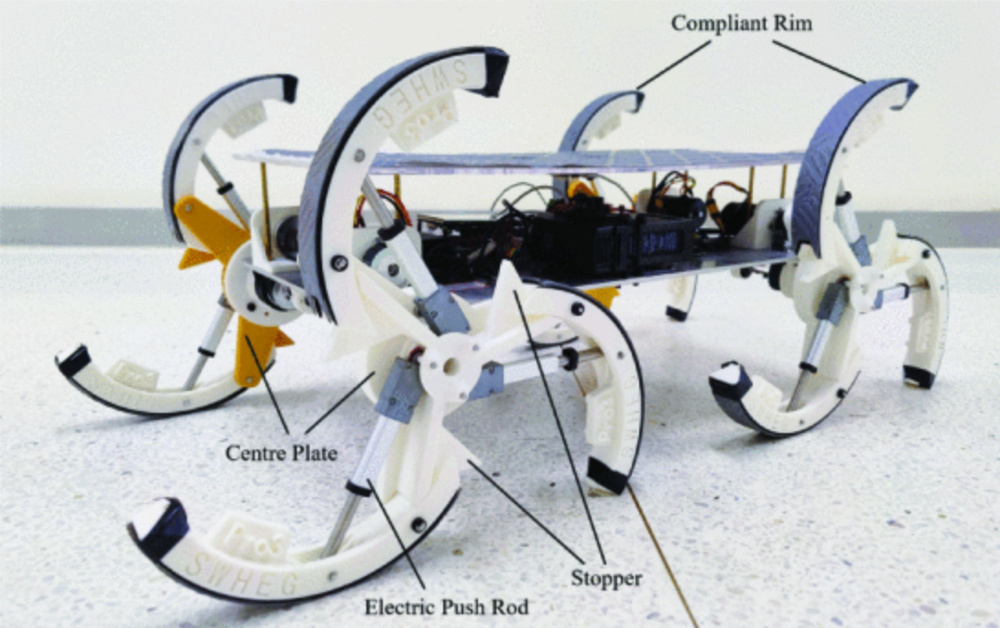

|
Cunxi(Jimmy) Dai I'm a MSR student at CMU RI. I'm fortunately to be advised by Prof. Ralph Hollis. Previous to CMU, I worked with Prof. Zhenzhong Jia, Prof. Mingming Zhang at SUSTech and Prof. Hugh Herr at MIT Media Lab. |

|
ResearchI'm interested in mobile manipulation, robot perception and control. |
|
|
Wheelchair Maneuvering with a Single-Spherical-Wheeled Balancing Mobile Manipulator
Cunxi Dai*, Xiaohan Liu*, Roberto Shu, Ralph Hollis, IROS, 2024 arXiv / YouTube / New Scientist Wheelchair maneuvering with Ballbot that balance on a single-spherical wheel. |
|
|
SWheg: A Wheel-Leg Transformable Robot With Minimalist Actuator Realization
Cunxi Dai*, Xiaohan Liu*, Jianxiang Zhou*, Zhengtao Liu, Zhenzhong Jia, in submission arXiv / YouTube Minimalist actuator realization of a wheel-leg transformable robot with tendon-driven transformation wheel module. |
|
|
Swhegpro: A novel robust wheel-leg transformable robot
Cunxi Dai*, Xiaohan Liu, Zhenzhong Jia, ROBIO, 2023 Paper / YouTube Robust design of a wheel-leg transformable robot for high-payload context. |
|

|
SWhegPro3: A Three-Impeller Wheel-Leg Transformable Robot with Variable Robust Adaptability to Stair Dimensions
Haoran Wang, Cunxi Dai*, Xiaohan Liu*, Zhenzhong Jia, ROBIO, 2024 Paper Three-Impeller wheel-leg transformable robot with variable robust adaptability to stair dimensions. |
|
|
Human-Exoskeleton Misalignment Reduction on Knee Joint via an RPR Mechanism-Based Device
Cunxi Dai*, Peiwen Fu, Bin Zhong, Kaiqi Guo, Mingming Zhang, ICARM, 2022 (Best Paper Finalist) Paper / YouTube Knee joint misalignment reduction with an RPR mechanism-based device. |
Projects |

|
Power Management Module and Force-Sensing Tendon for 2-DoF Ankle-Foot Prosthesis
MIT Media Lab, Biomechatronics Lab, 2023 |
|
Template from Jon Barron. |